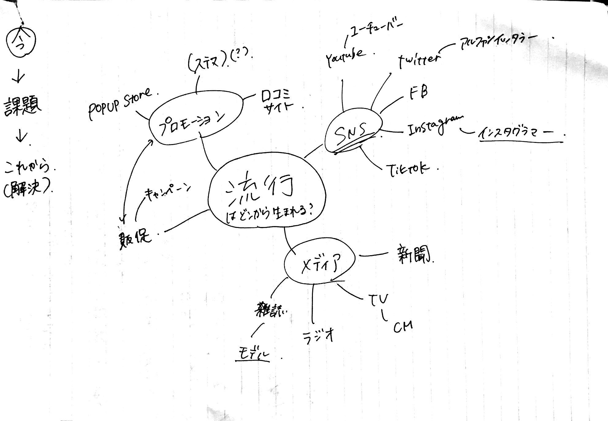

『流行の発信と真似に関する研究〜真似が及ぼす嫌悪感と快感』
①真似をする・真似をされるという行為が及ぼす、嫌悪感や快感について研究することで、人間の行動の真意を知る。
②真似から生まれる流行を探ることで、流行の生み出し方・プロセスを学ぶ＝＞仕組み化する（？）
①流行はどのようにして生まれるのか知りたい→仕組みがわかれば流行を生み出しやすくなる
②真似が及ぼすのはポジティブな感情だけではない、このジレンマを解消することはできるのか
③
①雑誌やTVなどメディアが主な流行の発信地＝東京など大都市から流行ることがほとんど
②トップスターから流行が生まれる→例）安室奈美恵からアムラーなど
→過去の流行に関してもう少し先行研究を調べる
①SNSの普及によって一般人でも流行の発信地となることができるようになった
②真似しやすい・キャッチーなもの・ビジュアルに特徴（＝インスタ映え）・発信しやすい・わかりやすい・誰でもできる
③例）USAダンス・○○チャレンジ（ステイホーム週間にインスタグラムのストーリーを使って発信）・ピコ太郎のPPAPなど
真似のしやすさが流行のきっかけとなっている（メモ：先行研究など探す）が、真似という行為にはポジティブな感情だけではなく、ネガティブな感情も存在する（メモ：前期にみんなから聞いた事象＋今後のアンケート調査）
→真似したい（＝流行にのりたい）VSマジョリティにはなりたくない（＝個性を大切にしたい）このジレンマを解消するには？
